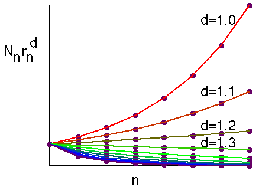

| The reason for the useless results we got when we tried to measure the area and length of the Koch curve is this. |
| Trying to measure in a dimension lower than an object gives infinity (Imagine the length of infinitely thin thread needed to cover up a filled-in square.) and |
| trying to measure in a dimension higher than an object gives zero. (Think of the volume of a filled-in square. How much water can it hold?) |
| For the Koch curve, the dimension lies between 1 and 2, so we should not be surprised that its length is infinite and its area zero. |
| To emphasize this point, recall that using boxes of side length
|
| we measure the length of a shape
by |
| we measure the area by
|
| So to measure a shape in dimension d, we might expect to use |
| Here are some graphs, using the Koch curve data, for different values of d. |
|  |
| The curves support the fact that the Koch curve dimension lies betwen 1.2 and 1.3. |
| Note: being an exponent, the dimension can be found with fairly coarse calculations, such as covering the shape with boxes of a limited collection of sizes. |
| Determining the measure in a particular dimension is a
much more subtle problem: |
Return to Box-Counting Dimension.